Karnataka Public Finance · Worked Examples
Three questions, answered straight from the package — and the handful of rules that keep your numbers honest. A budget is a promise; this is how you check whether it was kept.
Every figure below comes from the same CSVs in years/<year>/csv/.
Nothing was hand-edited. The point is not the answers — it is to show the moves: pick the right rows,
line up the right years, and let Budget, Revised and Actuals tell the story of plan, second thoughts, and reality.
The CSV keeps Header, Total and summary rows so it stays faithful to the PDF. Filter to
type_of_table='object_head', row_type='Data', row_level='Object-Head'
or you will double-count.
The four amount columns are positional: Actuals(T-2), BE(T-1), RE(T-1), BE(T). Files 2016-17→2022-23 carry identical, wrong year labels — re-date them from the folder year.
A few OCR rows hold absurd amounts (one is ₹1.5×10¹⁹ cr). Exclude single leaves above a sane
ceiling and trace them via validation_findings.csv.
A single fiscal year is assembled across three documents. The budget is tabled in its own year; the revised estimate appears the next year; the audited actuals land two years later. Reading them together is the whole trick.
The original plan, as tabled. Column 4 of the year's own volume.
Mid-course correction, printed alongside the next budget. Column 3.
What was actually spent, once accounts close. Column 1.
All rows under the revenue health heads — 2210 Medical & Public Health and 2211 Family Welfare — rolled up per year, showing how the Budget Estimate is revised and what is finally spent.

-- on the tidy long table (BE<-Y, RE<-Y+1, Actuals<-Y+2) SELECT fiscal_year, SUM(amount) FILTER(WHERE measure='BE') AS be, SUM(amount) FILTER(WHERE measure='RE') AS re, SUM(amount) FILTER(WHERE measure='Actuals') AS actuals FROM tidy WHERE major_head_code IN ('2210','2211') GROUP BY fiscal_year ORDER BY fiscal_year;
Health spend has missed its own budget for four straight years — actuals ran 8–15% below the plan, and the revised estimate quietly trims the promise rather than chasing it.
| Year | BE | RE | Actuals | Act/BE |
|---|---|---|---|---|
| 2018-19 | 8,508 | 8,594 | 8,369 | 0.98 |
| 2020-21 | 9,316 | 9,843 | 9,769 | 1.05 |
| 2021-22 | 11,157 | 12,784 | 12,718 | 1.14 |
| 2022-23 | 12,873 | 12,286 | 11,309 | 0.88 |
| 2023-24 | 13,252 | 12,958 | 12,238 | 0.92 |
| 2024-25 | 15,047 | 13,931 | 12,771 | 0.85 |
| 2025-26 | 16,575 | 16,221 | — | — |
| 2026-27 | 15,536 | — | — | — |
Salaries, pensions and interest — the contractual core of the budget. Salaries come from the direct pay object codes (grants-in-aid excluded); pensions from head 2071 and interest from head 2049, each counted once so nothing is double-booked.

-- committed, all three measures, per year SELECT fiscal_year, measure, SUM(amount) AS amt FROM tidy WHERE major_head_code = '2071' -- pensions OR major_head_code = '2049' -- interest OR object_head_code IN -- direct salaries ('001','002','003','004','005','008', '009','011','014','020','033','035') GROUP BY fiscal_year, measure;
Committed spend holds near a quarter of all expenditure — but interest is the fastest-rising leg, from ₹10,239 cr to ₹36,122 cr, steadily crowding out discretionary room.
| Year (Actuals) | Salaries | Pensions | Interest | % of total |
|---|---|---|---|---|
| 2018-19 | 14,637 | 15,104 | 14,770 | 20.8% |
| 2020-21 | 16,001 | 18,937 | 21,920 | 24.4% |
| 2021-22 | 18,353 | 20,666 | 24,984 | 23.2% |
| 2022-23 | 19,915 | 24,020 | 28,427 | 24.8% |
| 2023-24 | 22,526 | 24,859 | 29,907 | 24.1% |
| 2024-25 | 25,044 | 30,651 | 36,122 | 24.9% |
The budget is voted as 29 numbered demands (grants). Grouping leaf rows by demand_number
for 2024-25 shows, demand by demand, how Budget compares with Revised and Actuals — a direct read on execution discipline.

demand_names.json.)-- per-demand BE / RE / Actuals for one year SELECT demand_number, measure, SUM(amount) AS amt FROM tidy WHERE fiscal_year = '2024-25' GROUP BY demand_number, measure ORDER BY amt DESC;
Execution varies wildly: Energy (D24) spent 1.36× its budget while Finance (D03) used only 0.80× — a 56-point spread the headline budget never reveals.
| Demand | BE | RE | Actuals | Act/BE |
|---|---|---|---|---|
| D29 Debt Servicing | 66,208 | 62,689 | 63,017 | 0.95 |
| D03 Finance | 44,165 | 34,962 | 35,173 | 0.80 |
| D17 Education | 40,155 | 36,217 | 33,653 | 0.84 |
| D11 Women & Child | 33,796 | 33,922 | 34,139 | 1.01 |
| D24 Energy | 23,159 | 23,211 | 31,438 | 1.36 |
| D14 Revenue | 14,210 | 18,467 | 18,840 | 1.33 |